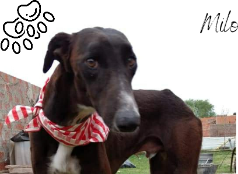
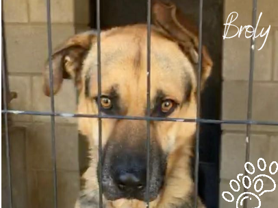

Milo: Fue hallado en muy mal estado al costado de la ruta. Estaba desnutrido y enfermo. Ahora está en tratamiento, pero necesita una familia que lo ame y cuide. Convive bien con otros perros y está castrado.

Broly: Un perro fuerte y hermoso, pero con años de maltrato detrás. Está en proceso de rehabilitación y necesita un adoptante con paciencia y espacio adecuado.
Broly en entrenamiento: Estamos ayudándolo a confiar en las personas para que pueda tener una segunda oportunidad.